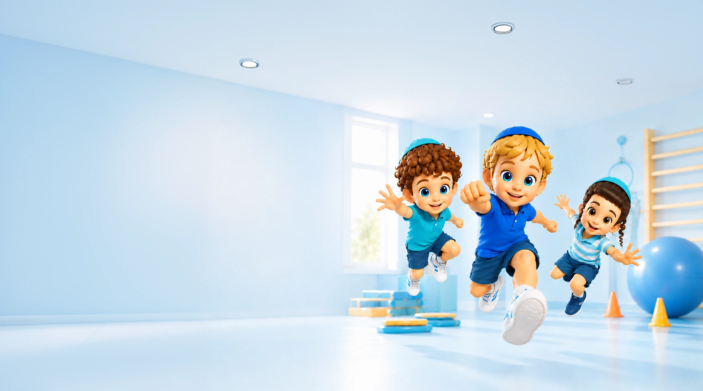
ספורט טיפולי שמקדם את הילד דרך תנועה ומשחק
בקידיספורט אנחנו משתמשות במשחק, בפעילות גופנית ובאינטראקציה קבוצתית כדי לקדם מטרות אישיות אצל ילדים.
הטיפול מתקיים אחת לשבוע במשך 45 דקות, בקבוצות קטנות של עד שישה ילדים.
לכל ילד נבנית תוכנית טיפול אישית, והפעילויות מותאמות כך שכל ילד יוכל להתקדם בתחומים שחשובים עבורו.
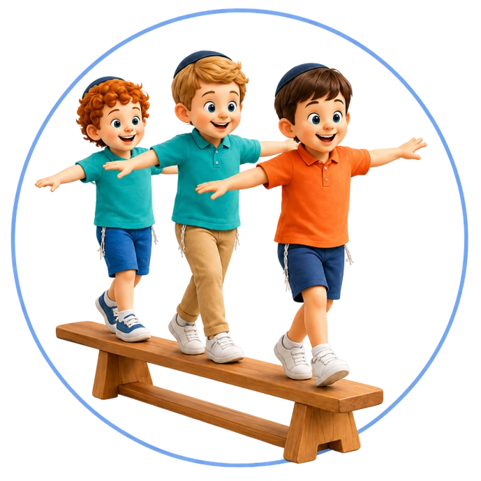
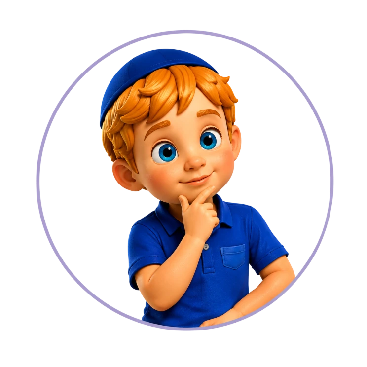
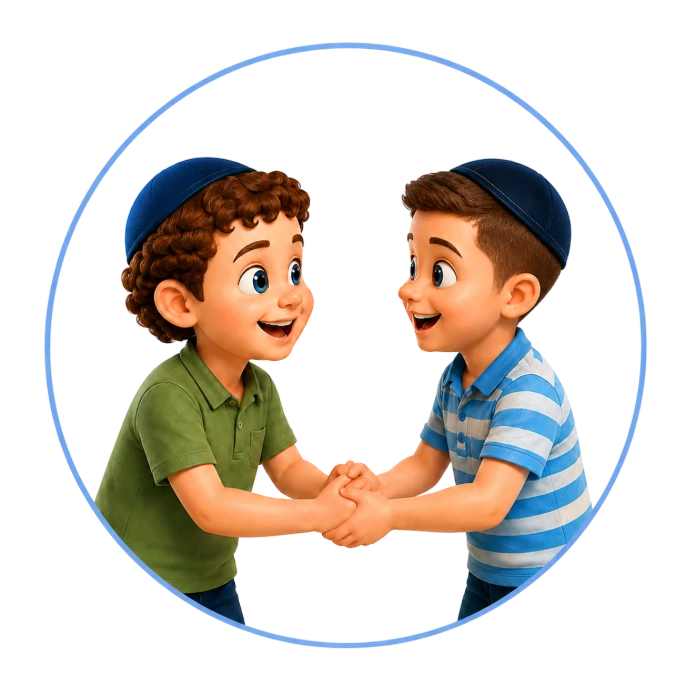
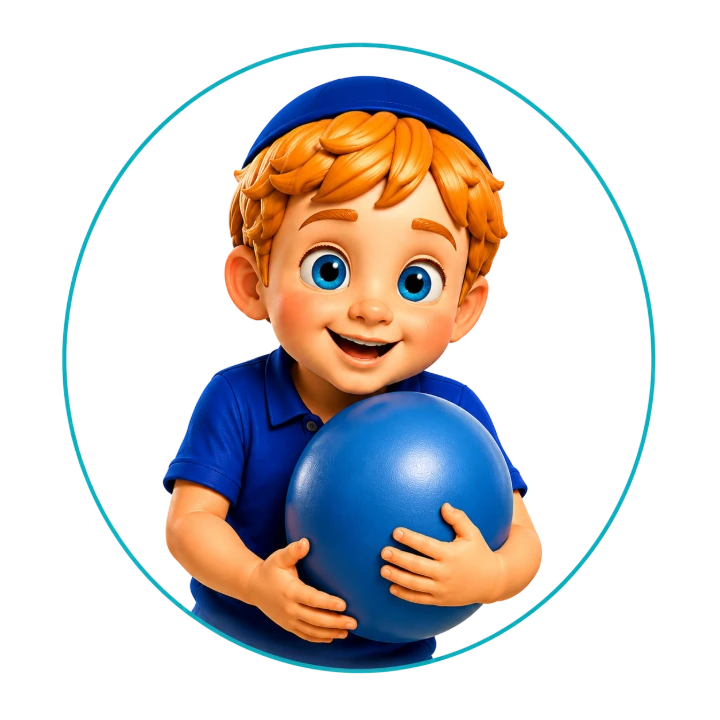
01
הילד מצטרף לפעילות
בתחילת הדרך הילד משתלב בקבוצה ואנחנו בודקות כיצד הוא מגיב למדריכה, למשחקים, לילדים האחרים ולמבנה הפעילות.
המטרה היא קודם כול לאפשר לו להכיר את המקום ולראות אם הוא מתחבר לחוויה.
02
שיחת אינטייק עם ההורים
במהלך החודש הראשון מתקיימת שיחה מעמיקה עם ההורים.
בשיחה אנחנו שומעות על החוזקות של הילד, האתגרים שהוא פוגש והנושאים שההורים היו רוצים לקדם בתחומים הרגשיים, החברתיים, ההתנהגותיים, המוטוריים והלימודיים.
03
בנית תוכנית אישית
אנחנו משלבות את המידע שקיבלנו מההורים עם מה שראינו במהלך הפעילויות.
מתוך התמונה המלאה נבנית לילד תוכנית אישית הכוללת מטרות ברורות וממוקדות.
04
עבודה בתוך הקבוצה
בכל שיעור הצוות בוחר שלוש עד ארבע מטרות מרכזיות עבור כל ילד.
אותה פעילות יכולה לשמש מטרות שונות אצל ילדים שונים.
לדוגמה, בזמן מסלול תנועה ילד אחד יכול לעבוד על חגורת הכתפיים, ילד אחר על המתנה לתור וילד נוסף על ביטחון מול הקבוצה.
05
תיעוד ומעקב
לפני כל שיעור נבנה מערך פעילות מסודר.
לאחר השיעור המדריכה מתעדת מה נעשה, כיצד הילד הגיב ובאילו נקודות נצפתה התקדמות או נדרש דיוק נוסף.
06
הדרכה מקצועית לצוות
כל מדריכה בקידיספורט מקבלת הדרכה מקצועית שבועית.
בהדרכה עוברים על הילדים, מנתחים מצבים שעלו בקבוצות ומדייקים את דרכי העבודה והמטרות.
07
דוח התקדמות להורים
אחת לרבעון ההורים מקבלים דוח ממוקד הכולל את הנושאים שעליהם עבדנו, התקדמות שנצפתה והמטרות להמשך.
לכל ילד נבנית תוכנית המותאמת לצרכים שלו. המדריכה מכירה את המטרות האישיות ומשלבת אותן בתוך המשחקים והתרגילים, כך שכל ילד מתקדם בתחומים הרלוונטיים עבורו.
אין צורך באבחון נפרד כתנאי להתחלה. הצוות לומד להכיר את הילד תוך כדי משחק, תנועה ואינטראקציה, ומשלב את ההתרשמות עם המידע מההורים לצורך בניית התוכנית האישית ועדכונה.
הקבוצה יוצרת הזדמנויות טבעיות לתרגל שיתוף פעולה, המתנה, קבלת גבולות, התמודדות עם הפסד וביטחון חברתי. המדריכה מזהה את האתגרים בזמן אמת ומעניקה לילד כלים להתמודדות נכונה יותר.
כל מה שצריך כדי להתקדם, במקום אחד
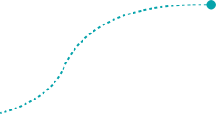
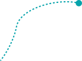
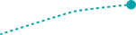
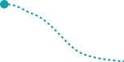
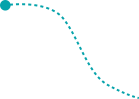
מפגש טיפולי קבוע
עד שישה ילדים
מטרות שמותאמות לילד
פעילות מגוונת ומהנה
בספורט טיפולי
תיעוד מקצועי שוטף
הכוונה מקצועית שבועית
אחת לרבעון
בהתאם לזכאות
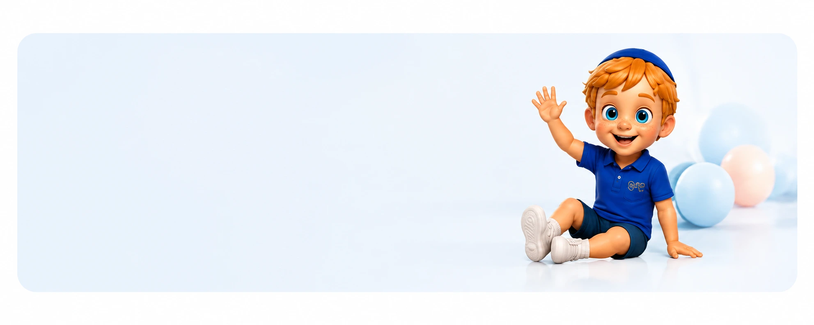
השאירו פרטים, ונחזור אליכם לשיחת היכרות
לשיחת התאמה